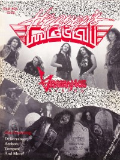

Heaven's Metal, Feb / Mar 1990, #23
| Cover |
|---|
|  |
| Writers in this Issue |
| Carpenter, Marc Craig, Matt Hettenberger, Walter Scheetz, Jeff Van Pelt, Doug Z., Fred |
Vengeance Rising
Article:- "Once Dead... Now Doing An Interview" by Doug Van Pelt
- "Conquering Sin With Jesus Christ" by Doug Van Pelt
- "The Temporarily Insane Deliverance Interview" by Doug Van Pelt
- "That Strange Archon Conspiracy" by Doug Van Pelt
- "Tempest Rages On" by Walter Hettenberger
- "Meet the Press"
- Holy Soldier - Holy Soldier by Doug Van Pelt
- Fools and Strangers - Hardcore Beatnicks by Doug Van Pelt
- Jason Underground - Under an Extra Tent by Doug Van Pelt
- Seventh Sign - demo by Doug Van Pelt
- Canaan - Dead End Street by Doug Van Pelt
- Euroclydon - Soul Windows by Doug Van Pelt
- Mercy Rule - Overruled by Doug Van Pelt
- various artists - Ultimate Metal by Doug Van Pelt
- Acceptance (MI) - 3-song demo by Doug Van Pelt
- Sabre's Edge - 5-song tape by Doug Van Pelt
- Retrace - Retrace Live! by Doug Van Pelt
- Clinic - Spread The Fire by Doug Van Pelt
- Bad Boy Butch Baston - Twisted and Bent by Doug Van Pelt
- Remanant - Step In Faith by Doug Van Pelt
- Petra - Petra Praise... The Rock Cries Out by Doug Van Pelt
- Johnny Spreen - 3-song demo by Doug Van Pelt
- Lifeline - Cry Hosanna! by Doug Van Pelt
- Solution - Footprints by Doug Van Pelt
- Whiteray - The First Sin by Doug Van Pelt
- The Lead - Burn This Record by Doug Van Pelt
- Vector - Simple Experience by Doug Van Pelt
- Paul Clark - Awakening From The Western Dream by Doug Van Pelt
- various artists - Crying For You, Baby by Marc Carpenter
- Detour - Last Call by Pastor Fred Z.
- Prophets on Vacation - Mosh To Relax To by Doug Van Pelt
- Crown of Thorns - Reach For The Crown by Doug Van Pelt
- The Mints - demo by Doug Van Pelt
- Final Axe - Beyond Hell's Gate by Doug Van Pelt
- Last Adam - demo by Doug Van Pelt
- Charizma - Join Hands by Doug Van Pelt
- various artists - Underground Metal 2 by Doug Van Pelt
- Petra - Petra Means Rock by Doug Van Pelt
- Guardian by Matt Craig
- Les "Pilate" Carlsen of Bloodgood
HM Back Page: "Up From The Dead"
Relevant Links
For more information about HM visit .You may be able to find HM in a library near you: Worldcat

© 2011 CMnexus. Last updated September 2019. Contact: editor -AT- cmnexus -DØT- org About